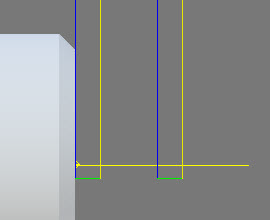
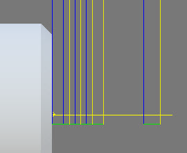

<div id="turningFace_doFinishingPasses"><p>指定した数の仕上げパスを実行するには、このオプションを有効にします。</p>
<table class="tipTable" cellspacing="10">
<tr>
<td><center></center></td>
<td><center></center></td>
</tr><tr>
<td><center><p><b>仕上げパス(無効)</b></p></center></td>
<td><center><p><b>仕上げパス(有効)</b></p></center></td>
</tr></table>
</div>